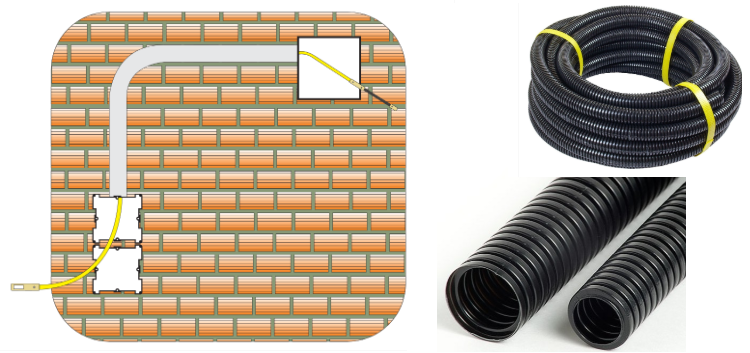
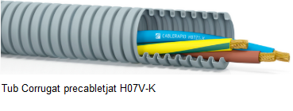
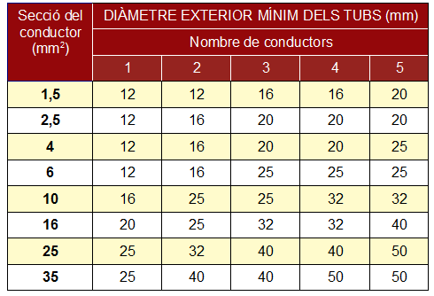
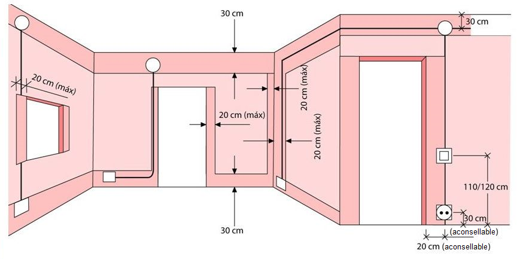
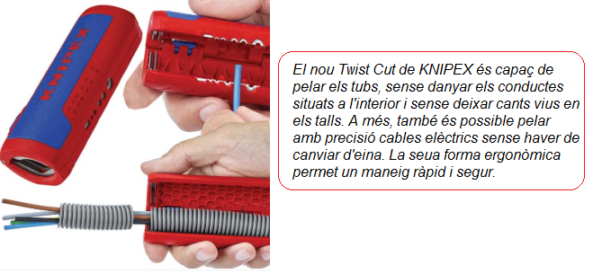

Es realitza, generalment, en obra nova en parets, sòls i falsos sostres. Els tubs poden ser rígids o flexibles. El tub més utilitzat aquest tipus d'instal·lació és el tub corrugat.

Els tubs corrugats són flexibles i generalment es fabrica en PVC. Per la seua forma, sembla com si estiguera fet a base d'anells estrets posats en fila uns pegats a uns altres. S'utilitzen molt en instal·lacions elèctriques però tenen més usos. Els tubs corrugats es recomanen especialment per a instal·lacions elèctriques encastades. Això sol succeir en les instal·lacions elèctriques de les cases, on el cablejat s'introdueix en parets i sostres. Pots trobar tubs corrugats de diferents colors com a gris, blanc, negre, marró o blau.
Hi ha diverses classes de tubs corrugats i podem classificar-los de diferents formes. Per a fer-ho de forma senzilla distingirem els tres tipus de tub corrugat més habituals:
- Tubs corrugat simple: es tracta d'un tub fabricat en PVC i utilitzat per a les instal·lacions elèctriques encastades en parets i sostres. Sol ser habitual trobar-ho en instal·lacions domèstiques.
- Reforçat: tubs corrugats reforçats o de doble capa: es tracta d'un tub corrugat per a exterior i té les mateixes aplicacions que el simple. Es diferencia del tub corrugat simple per estar construït amb dues capes: una interior de PVC rígid corrugat i una altra exterior de PVC flexible. La resistència a l'impacte d'aquest tub és el doble de la del tub corrugat simple.
- Tubs corrugats lliure d'halogens: el tub corrugat lliure d'halogens està fabricat a base de poliolefina ignifugada sense materials halogenats. En cas d'incendi, el material lliure d'halogens no emet apenes gasos tòxics, per la qual cosa s'utilitza en llocs públics, com poden ser les empreses. Les resistències a compressió i impacte d'aquest tub són les mateixes que les del tub simple.
Existeix un altre tipus de tub corrugat lliure d'halogens amb una sèrie de diferències respecte a l'anterior:
- Ofereix major resistència a corbat i compressió.
- És especialment recomanat per a encastar-ho en el formigó.
- Adequat per a les instal·lacions enterrades.
Altres tipus de tubs corrugats lliures d'haogens que podem trobar són els precabletjats (veure figura). Aquests tubs són útils per a estalviar-te el treball d'introduir els cables dins. N'hi ha preparats per a diferents cables, com poden ser cables telefònics, coaxials i altres.

El tub corrugat es presenta habitualment en rotllos, amb longituds de 5, 10, 15, 20, 25, 50, 75 i 100 metres i amb diferents diàmetres (16, 20, 25, 32, 40, 50, 63 mm). La següent taula ens ajuda a seleccionar el diàmetre del tub corrugat en funció del nombre de conductors i la secció d'aquests.

Els tubs encastats es colocaran a les distàncies màximes indicades en la següent figura:

- En els recorreguts horitzontals la distància màxima al sostre ha de ser de 50 centímetres com a màxim (recomanable 30 cm)
- En els recorreguts verticals s'han de mantenir a una distància dels angles de cantonades no superior a 20 centímetres.
Com tallar un tub corrugat? Hi ha diversos instruments per a tallar els tubs corrugats. Si no necessitem un tall molt net, es pot tallar amb tisora o cutter. També és possible tallar el tub corrugat amb serra per a metalls o amb una eina específica.
